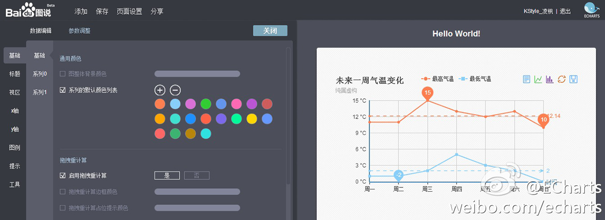

About Me
图说ECharts
Github 关注度
百度指数
搜索关键词
ECharts 特性
拖拽重计算
动态类型切换
动态类型切换
值域漫游(Data Range)
地图特效（百度迁徙）
地图特效（微博签到）

11.8w 数据
时间轴（Timeline）
Even Better
图说
图说

3D ?

ECharts-X
3D 地图（Globe）
人口分布（海胆图）
飞机航线可视化
向量场可视化


洋流
风场
更常用的 3D 图？
曲面图（Surface）

参数曲面（Parametric Surface）

Next ?
社区以及合作
教 程
每个季度免费帮助一个合作伙伴做可视化展现项目的合作
Thanks
 易用
易用 交互
交互 高性能
高性能 移动
移动 扩展
扩展 图说
图说